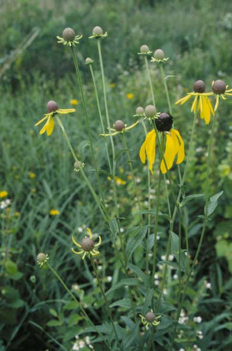
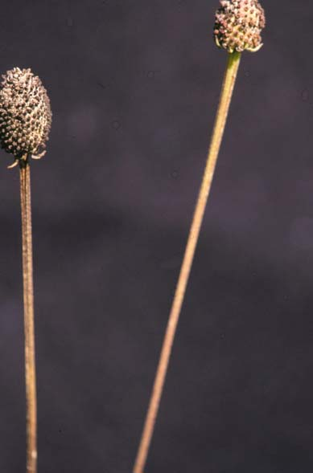
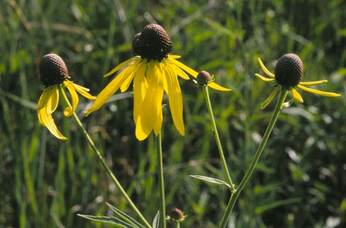
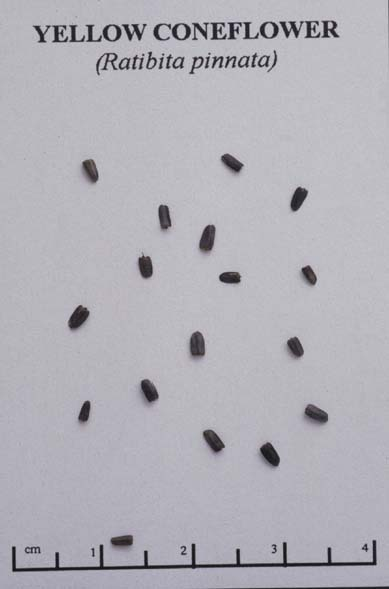

Ratibida Pinnata
Family: Asteraceae
Yellow Coneflower
Swink/Wilhelm #4



Click to view larger photo
FLOWERING: July to August
SEED TIMING: October to November
HABITAT: Dry, mesic, and wet prairies
DIAGNOSTIC FEATURES: 3 - 5 feet. Tall plant, with single flowers to a stem and reflexed yellow petals with a conelike disk that darkens with maturity. Alternate lower leaves on long petioles are divided into 3 - 7 leaflets. Leaflets are slender and lance-shaped and usually have coarse teeth. Leaves tend to droop slightly. When the center cone is crushed it has a distinct anise scent.
TO PICK: The seed head is a gray naked cone, sometimes confused with the flower in bud. The head should crumble between the fingers when ripe, but it is sometimes hard to pull off. The seeds are small, flattened ovals with winged margins. Pick entire head.